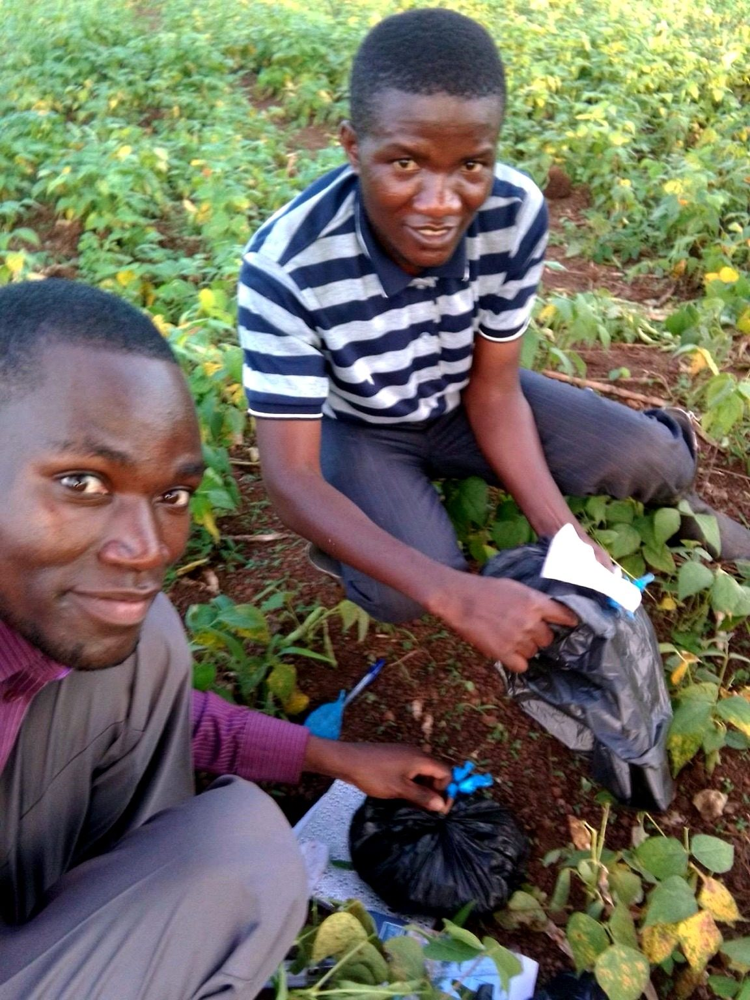
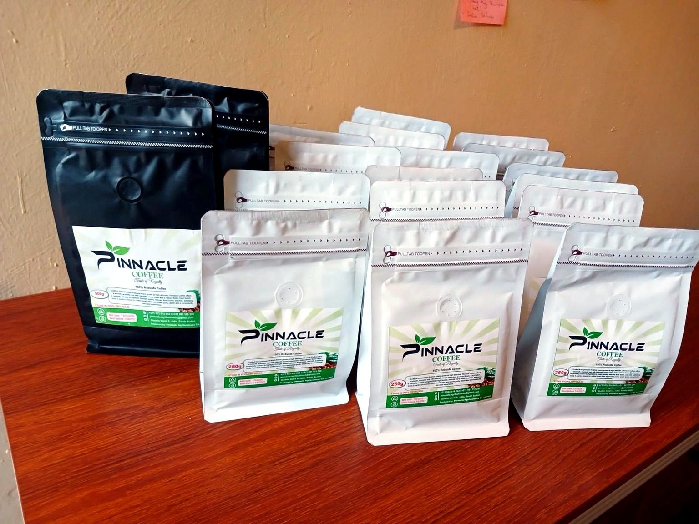
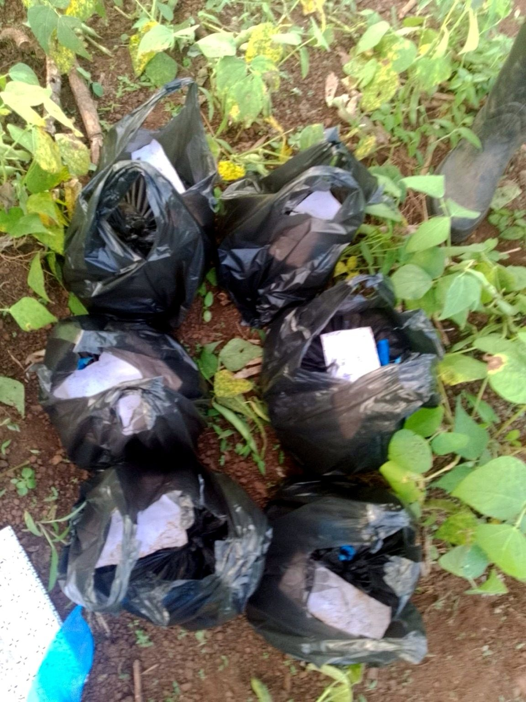
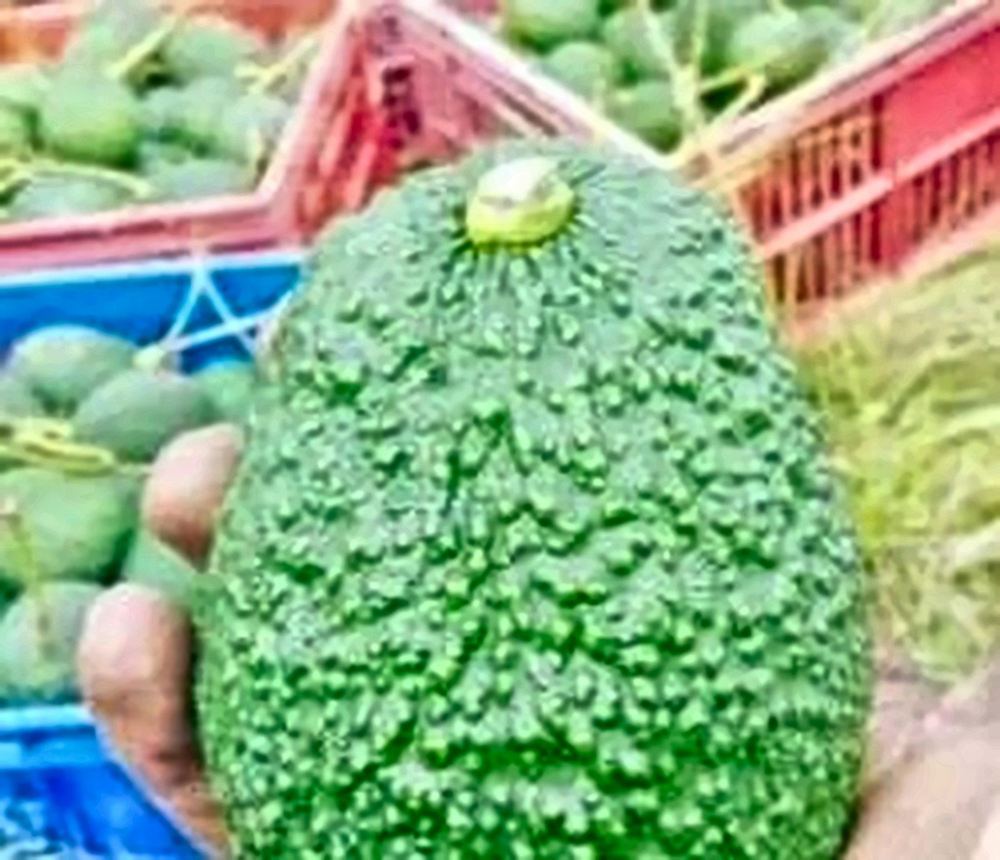
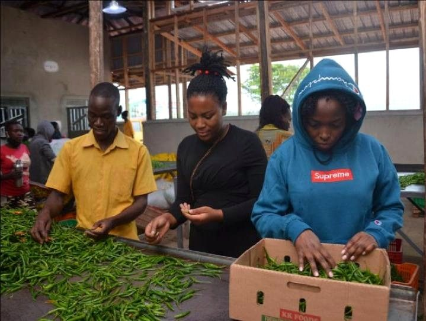
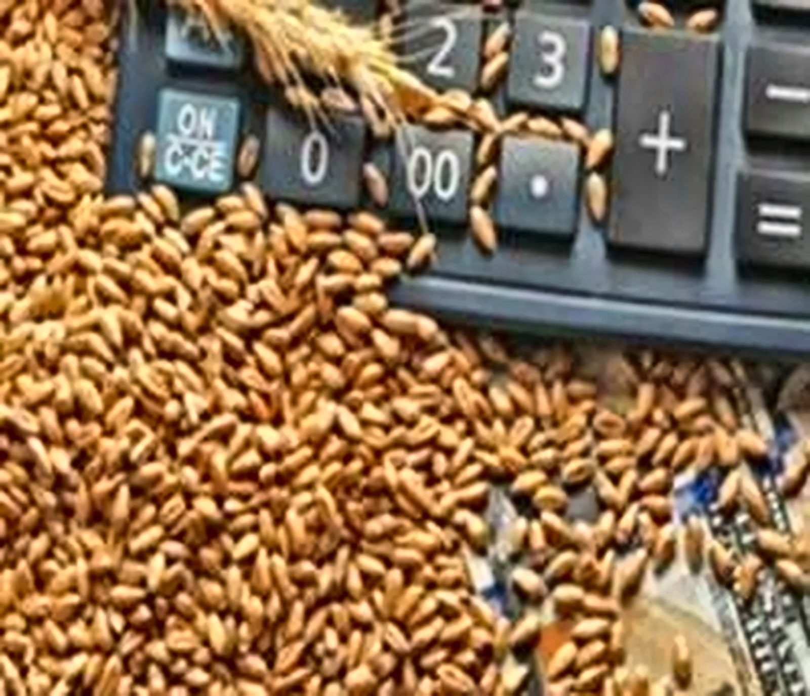

Our Work
Real people.
Real agriculture.
A closer look at the crops, livestock, people and produce behind Pinnacle's day-to-day agribusiness work across Uganda.

Seedling ProductionField & Crop

Field InspectionTraining & People

Field TeamworkTraining & People

Protected AgricultureField & Crop

Pinnacle CoffeeCoffee

Pinnacle CoffeeCoffee

Crop EstablishmentField & Crop

Vegetable ProductionField & Crop

Produce & Market HandlingProduce & Market

Produce & Market HandlingProduce & Market

Farmer TrainingTraining & People

Crop Health & ScoutingField & Crop

Commercial Crop ProductionField & Crop

Produce & Market HandlingProduce & Market

Horticultural ProductionProduce & Market

Horticultural ProductionField & Crop

Livestock ProductionLivestock

Cereal Crop ProductionField & Crop